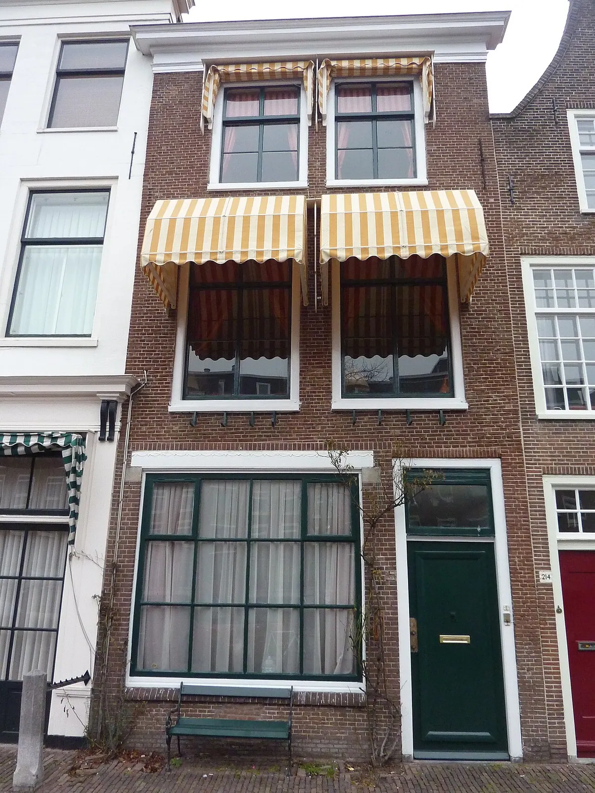

REVIEW — 0 новых одобрений. Публикация не разрешена. Дата подготовки: 16 ноября 2026. Новые материалы дополняют замороженный пакет PR №75. Полная визуальная приёмка отложена до формирования релиз-кандидата.
Неизменяемый исходный selection
10 Amsterdam / 102 EN/NL-блока / 10 фото; 10 четырёхгородских ревизий; пять прежних фото. Всего 25 ревизий, 23 разных ID, 145 файлов.
20 существующих ID; 140 новых блоков EN/NL; 11 новых координат BAG и 9 сохранённых. 21 новая проверка официальных страниц/PDF и 11 BAG; 32 доказательства от 15 ноября использованы без повторного скачивания и изменения даты. Семь прежних лицензированных фото использованы повторно, включая датированный вид здания Café Laken. Новых актуальных главных фото: 0.
Главное фото: подтверждённого современного изображения нет.
EN
A coffee roastery and café on Nieuwe Rijn, with breakfast and lunch. Tables are for walk-ins.
Coffee roasting
Borgman Borgman says it began selecting and roasting beans in 2013 and roasts several times a week. This is a working café, not a scheduled factory tour.
Koffiebranderij en café aan de Nieuwe Rijn, met ontbijt en lunch. Je loopt binnen zonder reservering.
Koffiebranden
Borgman Borgman selecteert en brandt volgens de eigen website sinds 2013 bonen, meerdere keren per week. Dit is een café, geen aangekondigde rondleiding door een fabriek.
The operator describes wheelchair-friendly access, a children’s corner and a baby-changing area. Ask about your specific access needs; no measurements were independently checked.
De exploitant noemt rolstoelvriendelijke toegang, een kinderhoek en een verschoonplek. Vraag naar je eigen toegankelijkheidsbehoeften; maten zijn niet onafhankelijk gecontroleerd.
The linked chain menu lists a croissant at €3.50 and avocado toast at €10.50, checked 16 November 2026. Confirm Leiden availability and extras before ordering.
De gekoppelde ketenkaart noemt een croissant voor €3,50 en avocadotoast voor €10,50, gecontroleerd op 16 november 2026. Bevestig beschikbaarheid in Leiden en extra’s voor je bestelt.
The linked November menu lists Banoffee Pancakes at €12.50 and a dinner beef burger with fries at €21.50. Checked 16 November 2026; drinks are separate.
Maandag–donderdag 10.00–00.00; vrijdag–zaterdag 09.00–00.00; zondag 09.00–23.00. Dit zijn openingstijden, geen garantie dat iedere kaart steeds beschikbaar is.
De gekoppelde novemberkaart noemt Banoffee Pancakes voor €12,50 en een dinerburger met friet voor €21,50. Gecontroleerd op 16 november 2026; drankjes zijn apart.
place.leiden-cafe-laken · leiden · Oude Singel 30, 2312RA Leiden Координаты: {'latitude': 52.1628594, 'longitude': 4.48728587}
Vera de Kok · 2015-03-21 · resized WebP, no content edits · Источник · CC BY-SA 4.0
EN
Museum De Lakenhal’s café on the Oude Singel welcomes museum visitors and people stopping by from the city.
A museum café
Café Laken is the café of Museum De Lakenhal. Its website also welcomes shoppers and neighbours; this does not imply free admission to the museum galleries.
Het café van Museum De Lakenhal aan de Oude Singel verwelkomt museumbezoekers en mensen die vanuit de stad binnenlopen.
Een museumcafé
Café Laken is het café van Museum De Lakenhal. De website verwelkomt ook winkelend publiek en buurtbewoners; dat betekent geen gratis toegang tot de museumzalen.
The operator accepts walk-ins and reservations and has a separate group route. Day and evening allergen cards are linked; discuss dietary needs before ordering.
Je kunt binnenlopen of reserveren; voor groepen is er een aparte route. Er zijn allergenenkaarten voor dag en avond; bespreek dieetwensen voor je bestelt.
Главное фото: подтверждённого современного изображения нет.
EN
Lunch and shared dinner dishes beside the Visbrug, with a terrace on the Nieuwe Rijn.
On the water
Dende describes a terrace on the Nieuwe Rijn beside the Visbrug, with heaters, blankets and heated cushions. Children and dogs are welcome according to the operator.
Lunch en deelgerechten voor het diner bij de Visbrug, met een terras op de Nieuwe Rijn.
Op het water
Dende beschrijft een terras op de Nieuwe Rijn bij de Visbrug, met heaters, dekens en verwarmde kussens. Kinderen en honden zijn volgens de exploitant welkom.
Uit de actuele menupagina zijn geen betrouwbare gerechtprijzen gehaald. Bekijk de officiële kaart en vraag het personeel naar allergieën of dieetaanpassingen.
Online reservations and à-la-carte dining are offered up to eight people. Bookings have a 2.5-hour slot; a terrace booking does not reserve an indoor table too.
The FAQ says the restaurant is not wheelchair accessible and bills cannot be split. Discuss allergies beforehand; payment accepts cash, debit and credit cards.
De novemberkaart noemt paddenstoelentaco’s voor €11,50 en geroosterde pompoen voor €21,50. Gecontroleerd op 16 november 2026; losse gerechten zonder drankjes.
Volgens de FAQ is het restaurant niet rolstoeltoegankelijk en kan de rekening niet worden gesplitst. Bespreek allergieën vooraf; contant, pin en creditcard zijn mogelijk.
The six-course Gerechtelijke dwaling is €57.50 per person and must be ordered by the whole table. The €100 all-in option has different inclusions; confirm these when booking.
De zesgangen Gerechtelijke dwaling kost €57,50 per persoon en is alleen per tafel te bestellen. Het all-inarrangement van €100 heeft andere inbegrepen onderdelen; bevestig die bij reserveren.
Avocado sourdough sandwich €11.50; roasted-pepper risotto €23.50; flat-iron steak €27.50. These are individual dishes, excluding drinks and extras; consult the current menu before ordering.
Use the official website or call +31 71 7400300 to discuss a visit. For ingredients and allergens, consult the menu’s allergen information and ask staff.
The menu’s Crunchy burger uses a parsnip patty, plant-based brioche and plant-based mayonnaise, with fries. Check the current allergen information instead of assuming a plant-based dish suits every allergy.
The drinks section offers separate snacks such as focaccia with dips and gyoza. Their portions and prices differ from starters and main dishes; choose from the relevant menu section.
Lunchen of dineren in de voormalige waag aan de Aalmarkt, met een terras aan het water en een aparte dinerkaart.
In de Waag
Het historische gebouw huisvest nu een café-restaurant. De ligging aan de Aalmarkt maakt een maaltijd goed te combineren met een wandeling door de binnenstad.
Voorbeelden van de kaart · gecontroleerd 15 november 2026
Zuurdesembrood met avocado €11,50; risotto met geroosterde paprika €23,50; flat iron steak €27,50. Dit zijn losse gerechten, zonder drankjes en extra’s; bekijk voor je bestelling de actuele kaart.
Gebruik de officiële website of bel +31 71 7400300 om je bezoek af te stemmen. Bekijk voor ingrediënten en allergenen de allergeneninformatie bij de kaart en vraag het personeel.
De Crunchy burger op de kaart heeft een pastinaakburger, plantaardige brioche en plantaardige mayonaise, met friet. Controleer allergenen; plantaardig is niet geschikt voor iedere allergie.
Bij de borrel staan aparte hapjes zoals focaccia met dips en gyoza. Porties en prijzen verschillen van voor- en hoofdgerechten; kies uit het passende kaartonderdeel.
Ngchikit · 2019-04-27 · Historical exterior / Historische buitenopname · resized WebP, no content edits · Источник · CC BY-SA 4.0
EN
A pancake restaurant on Steenstraat with sweet and savoury choices, including a children’s section on the menu.
Pancakes on Steenstraat
The menu ranges from simple sweet pancakes to savoury combinations. Choose the dish itself rather than treating every pancake as the same fixed-price meal.
The children’s section lists poffertjes for €7.50. This is a menu item, not a complete meal package with drinks. Check the current menu for other choices.
The menu also includes soups and main dishes, including mushroom lasagne marked vegetarian. A mixed group can check these options without assuming everyone must order pancakes.
The menu lists additional ingredients from €2 each, checked 15 November 2026. These are extra to the chosen pancake; tell staff about allergies before selecting toppings.
Volgens de website en de menukaart voor 2026 dagelijks open van 11.30 tot 21.30. Neem voor afwijkende feestdagen of een groepsbezoek contact op met het restaurant.
Op de kinderkaart staan poffertjes voor €7,50. Dit is een los gerecht en geen volledig arrangement met drankjes. Bekijk de actuele kaart voor andere keuzes.
De kaart bevat ook soepen en hoofdgerechten, waaronder als vegetarisch aangeduide paddenstoelenlasagne. Een gemengd gezelschap kan deze opties bekijken zonder dat iedereen pannenkoeken hoeft te kiezen.
De kaart vermeldt extra ingrediënten vanaf €2 per stuk, gecontroleerd op 15 november 2026. Die komen boven op de gekozen pannenkoek; meld allergieën voordat je toppings kiest.
Lunch Thursday–Saturday 12:30–15:30, arriving by 14:30. Dinner Monday–Saturday 17:00–23:30, arriving by 20:30. Check the reservation page for seasonal closures.
The lunch page lists two courses for €37.50 or three for €42.50. Lunch days and the last arrival time still apply; an evening booking is a separate service.
Book through the official reservation page or call +31 71 5126666. The terrace is smoke-free. Discuss dietary requirements when booking; the kitchen warns that cross-contamination cannot be excluded.
The five-dish bites menu is €69.50 per person in the source checked 15 November 2026. It must be ordered per table and before 20:00; wine pairings are separate.
The lunch page lists a chef-selected sharing board for two at €27.50 per person, checked 15 November 2026. Lunch service days and the latest arrival time still apply.
Driegangenverrassingsmenu €52,50; viergangenverrassingsmenu €62,50. Een hoofdgerecht met geroosterde spitskool kost €29,95. Deze bedragen zijn exclusief drankjes.
De lunchpagina vermeldt twee gangen voor €37,50 of drie voor €42,50. De lunchdagen en uiterste aankomsttijd blijven gelden; een avondreservering valt onder de dinerservice.
Reserveer via de officiële reserveringspagina of bel +31 71 5126666. Het terras is rookvrij. Bespreek dieetwensen bij de reservering; de keuken waarschuwt dat kruisbesmetting niet uit te sluiten is.
Het bitesmenu met vijf gerechtjes kost €69,50 per persoon in de bron van 15 november 2026. Bestellen kan per tafel en vóór 20.00; wijnarrangementen zijn apart.
De lunchpagina noemt een door de chef samengestelde lunchplank voor twee voor €27,50 per persoon, gecontroleerd op 15 november 2026. De lunchdagen en uiterste aankomsttijd blijven gelden.
hotel.leiden-oude-morsch · leiden · Park de Put 1, 2312 BM Leiden Координаты: {'latitude': 52.161964, 'longitude': 4.484313}
Rudolphous · 2017-09-16 16:03:15 · Archive photograph / Archieffoto · resized WebP; no content edits · Источник · CC BY-SA 4.0
EN
A boutique hotel in the former guard building of the Morspoort barracks, beside Park de Put. Its location connects a stay with Leiden’s western city centre.
About this place
The guard building dates from 1817; the hotel has individually arranged rooms rather than a uniform room layout.
The facilities list marks a baby cot and breakfast in bed as paid extras. Request the service and its price directly; neither is automatically included in every room rate.
The hotel describes bicycle, scooter, car and boat rentals in the surrounding area. This is not confirmation that the hotel itself supplies them or that a rental is available on your dates.
Een boetiekhotel in het voormalige wachtgebouw van de Morspoortkazerne, naast Park de Put. De ligging sluit aan op het westelijke deel van de Leidse binnenstad.
Over deze plek
Het wachtgebouw dateert uit 1817; de hotelkamers hebben verschillende indelingen.
De voorzieningenlijst noemt een babybedje en ontbijt op bed als betaalde extra’s. Vraag de service en prijs rechtstreeks na; ze zijn niet automatisch bij iedere kamerprijs inbegrepen.
Het hotel noemt fiets-, scooter-, auto- en bootverhuur in de omgeving. Dat bevestigt niet dat het hotel zelf verhuurt of dat er op jouw data beschikbaarheid is.
hotel.leiden-huys-van-leyden · leiden · Oude Singel 212, 2312 RJ Leiden Координаты: {'latitude': 52.162088, 'longitude': 4.4971}

Rudolphous · 2010-02-07 · Archive photograph / Archieffoto · resized WebP; no content edits · Источник · CC BY 3.0
EN
A small canal-side hotel on the Oude Singel, with rooms in historic buildings and separate apartment options. Check the exact accommodation before reserving.
Location
Oude Singel 212, 2312 RJ Leiden. Use the hotel’s contact page for arrival arrangements.
The canal-view suite information lists buffet/à-la-carte breakfast at €21.50, breakfast in bed at €26 and takeaway breakfast at €13.75 per person. Source checked 15 November 2026; confirm inclusion for your booking.
This suite is on the first floor. The hotel warns that sound from other guests can sometimes be heard in the old canal house; ask about room position if quiet or stair access matters to you.
Een kleinschalig hotel aan de Oude Singel, met kamers in historische panden en afzonderlijke appartementen. Controleer vóór reservering welke accommodatie je boekt.
Locatie
Oude Singel 212, 2312 RJ Leiden. Gebruik de contactpagina van het hotel voor afspraken over aankomst.
De informatie bij de suite met grachtzicht noemt buffet/à-la-carteontbijt voor €21,50, ontbijt op bed voor €26 en afhaalontbijt voor €13,75 per persoon. Bron gecontroleerd op 15 november 2026; bevestig wat bij jouw boeking hoort.
Deze suite ligt op de eerste verdieping. Het hotel waarschuwt dat in het oude grachtenpand soms geluid van andere gasten hoorbaar is; vraag naar de kamerligging als rust of traptoegang belangrijk is.
The facilities page lists free access to SportCity in the neighbouring historic church. Ask the hotel how entry works and check the gym’s own opening hours.
The operator offers bespoke arrangements and wine tastings in its historic cellar. These require a separate request; they are not included in an ordinary room reservation.
Een suitehotel in historische panden aan de Steenschuur. Het hotel is adults-only en heeft geen lift; controleer daarom vooraf hoe je de kamer bereikt.
Locatie
Het contactadres is Steenschuur 11, 2311 ES Leiden; de site noemt ook de gecombineerde panden 11–13.
De voorzieningenpagina noemt gratis toegang tot SportCity in de monumentale kerk ernaast. Vraag het hotel hoe toegang werkt en controleer de eigen openingstijden van de sportschool.
De exploitant biedt arrangementen op maat en wijnproeverijen in de historische kelder. Daarvoor is een aparte aanvraag nodig; ze zijn niet inbegrepen bij een gewone kamerreservering.
The opened menu distinguishes Turkish eggs with labneh from a French omelette with brie and sourdough. These are different dishes; ask which ingredients can be adjusted.
Sweet choices include blueberry pancakes and banana-pudding French toast. The menu describes accompaniments but gives no prices, so compare the current café menu before ordering.
De geopende kaart onderscheidt Turkse eieren met labneh van een Franse omelet met brie en zuurdesem. Het zijn verschillende gerechten; vraag welke ingrediënten kunnen worden aangepast.
Zoete keuzes zijn onder meer bosbessenpannenkoeken en wentelteefjes met bananenpudding. De kaart beschrijft de toevoegingen maar noemt geen prijzen; bekijk de actuele cafékaart voordat je bestelt.
The café says its filter beans and roaster change monthly. Ask what is being brewed today; the website’s named beans are not a guarantee of the current selection.
The record shop describes independent Dutch labels, cassettes, CDs and second-hand LPs. Stock changes; a named label on the website does not confirm that a particular record is available.
Volgens het café wisselen de filterbonen en brander maandelijks. Vraag wat er vandaag wordt gezet; genoemde bonen op de website garanderen niet het huidige aanbod.
De platenwinkel noemt onafhankelijke Nederlandse labels, cassettes, cd’s en tweedehands-lp’s. Voorraad wisselt; een genoemd label bevestigt niet dat een specifieke plaat verkrijgbaar is.
Главное фото: подтверждённого современного изображения нет.
EN
A boutique hotel in Haagsche Bluf with named room categories, including an accessible-room category. Confirm the details of your chosen room before booking.
Rooms
The room catalogue distinguishes compact doubles, twins, larger rooms and a two-floor loft. Layout and capacity depend on the category.
The Canvas room offers beds that can be separated or joined; The Frame is a twin deluxe category. Select the bed arrangement explicitly rather than relying on the generic room label.
The Collector Loft occupies two floors and lists a freestanding bath. That layout differs from the separately listed disability-access room; confirm the room suited to your mobility needs.
Een boetiekhotel in de Haagsche Bluf met benoemde kamertypen, waaronder een toegankelijke kamercategorie. Bevestig vóór boeken de details van je gekozen kamer.
Kamers
Het kameraanbod onderscheidt compacte tweepersoonskamers, twin-kamers, grotere kamers en een loft met twee verdiepingen. Indeling en capaciteit hangen af van het type.
The Gallery Disability Access staat als apart kamertype vermeld. Vraag het hotel naar de afmetingen en voorzieningen die voor jouw verblijf belangrijk zijn.
Bij The Canvas kunnen de bedden los of tegen elkaar staan; The Frame is een twin-deluxecategorie. Kies de bedopstelling bewust en vertrouw niet alleen op een algemene kamernaam.
The Collector Loft heeft twee verdiepingen en een vrijstaand bad. Dat is een andere indeling dan de apart vermelde toegankelijke kamer; bevestig welk kamertype bij je mobiliteit past.
Главное фото: подтверждённого современного изображения нет.
EN
A hotel on Keistraat in central Utrecht, with limited bookable parking and clearly stated arrival arrangements. Room prices depend on dates and rate conditions.
Arrival
Check-in is from 15:00 and check-out by 11:00. Earlier arrival and late departure require separate arrangements and may cost extra.
Limited spaces at Jansdam 1 must be reserved: €40 from 15:00 check-in to 11:00 check-out. Extra hours depend on availability and are charged separately.
The FAQ allows a free cot for a child up to two in certain room types, subject to availability. Contact the hotel in advance; a cot does not fit every room.
A booking of at least four rooms is treated as a group reservation with different conditions. Ask the hotel for those terms before booking rooms separately.
Een hotel aan de Keistraat in de Utrechtse binnenstad, met beperkt reserveerbaar parkeren en duidelijke aankomstafspraken. Kamerprijzen hangen af van data en tariefvoorwaarden.
Aankomst
Inchecken kan vanaf 15.00 uur; uitchecken vóór 11.00 uur. Eerder aankomen en later vertrekken vragen aparte afspraken en kunnen extra kosten.
Beperkte plaatsen aan Jansdam 1 moeten worden gereserveerd: €40 van inchecken om 15.00 tot uitchecken om 11.00 uur. Extra uren hangen af van beschikbaarheid en kosten apart.
Volgens de FAQ is in bepaalde kamertypes een gratis babybedje voor een kind tot twee jaar mogelijk, afhankelijk van beschikbaarheid. Overleg vooraf; het past niet in elke kamer.
Две новые архивные галереи — отдельно от главных изображений
restaurant.leiden-bikini
Haven 1–3, Leiden, photographed on 9 September 2015. Archive view of the building and waterfront; it does not document today’s Bikini restaurant, terrace or signage.
Haven 1–3 in Leiden, gefotografeerd op 9 september 2015. Archiefbeeld van het pand en de kade; geen weergave van het huidige restaurant Bikini, terras of de huidige gevelreclame.
Xsandriel / Wikimedia Commons / CC BY-SA 4.0. Resized WebP, no crop or content edits; derivative remains CC BY-SA 4.0. Оригинал и авторство · Лицензия
Stationsweg 25, Leiden, photographed on 21 March 2015. Archive view of the building; this is not a photograph of the current Paco Ciao interior or entrance arrangements.
Stationsweg 25 in Leiden, gefotografeerd op 21 maart 2015. Archiefbeeld van het pand; geen foto van het huidige interieur of de toegangssituatie van Paco Ciao.
Vera de Kok / Wikimedia Commons / CC BY-SA 4.0. Resized WebP, no crop or content edits; derivative remains CC BY-SA 4.0. Оригинал и авторство · Лицензия
Четыре тематические подборки — редакционные черновики
Coffee and culture in Leiden / Koffie en cultuur in Leiden
Use Café Laken as the documented café of Museum De Lakenhal. For another coffee stop, compare Barista and 30ML by their own hours and menu. These are alternatives, not a timed walking route; museum admission and refreshments are separate.
Gebruik Café Laken als het gedocumenteerde café van Museum De Lakenhal. Vergelijk voor een andere koffiestop Barista en 30ML op hun eigen openingstijden en kaart. Dit zijn alternatieven, geen getimede wandelroute; museumtoegang en consumpties zijn apart.
Choose a historic stay by practical needs / Kies een historisch verblijf op praktische behoeften
Compare d’Oude Morsch, Huys van Leyden and Steenhof Suites by room access, reception arrangements and paid extras. Historic architecture does not mean the same facilities in every room. Check the exact room, date-specific rate and cancellation terms with the hotel.
Vergelijk d’Oude Morsch, Huys van Leyden en Steenhof Suites op kamertoegang, receptieafspraken en betaalde extra’s. Historische architectuur betekent niet dat iedere kamer dezelfde voorzieningen heeft. Controleer kamer, datumprijs en annuleringsvoorwaarden bij het hotel.
Build a day around photography and brunch / Stel een dag samen met fotografie en brunch
Fotomuseum Den Haag, Kaafi and The Collector offer different parts of a visit: an exhibition, a daytime meal and a stay. They are separate venues across the city, not a single package. Check transport and each venue’s opening or booking terms independently.
Fotomuseum Den Haag, Kaafi en The Collector bieden verschillende onderdelen van een bezoek: een tentoonstelling, een dagmaaltijd en een verblijf. Het zijn afzonderlijke locaties in de stad, geen gezamenlijk arrangement. Controleer vervoer en bezoek- of boekingsvoorwaarden per locatie.
Books, coffee and a science visit / Boeken, koffie en een wetenschapsbezoek
Choose between browsing Neude, coffee and records at Koffie Leute, and a booked visit to Sonnenborgh. Library workspace rules, café walk-ins and museum or stargazing tickets are different arrangements. This selection does not guarantee same-day availability or a particular travel time.
Kies tussen rondkijken in Neude, koffie en platen bij Koffie Leute en een geboekt bezoek aan Sonnenborgh. Werkplekregels, vrije inloop in het café en museum- of sterrenkijktickets zijn verschillende regelingen. Deze selectie garandeert geen beschikbaarheid op dezelfde dag of bepaalde reistijd.
Kaafi, Koffie Leute, The Collector, The Nox: права на главные фото по-прежнему не подтверждены. Rembrandtpark, City Hotel Rembrandt, Kazerne и Supernova по-прежнему требуют современных главных фото. Старые снимки не изменены. Переписка с правообладателями не отправлялась.
Anne&Max не включён: противоречивые часы и прямой 403. Новые архивные изображения не активированы в карточках. Фото Tabu и Dende отклонены с причинами в media-sources.json. Цены, часы и доступность нужно ещё раз проверить перед разрешённым выпуском.